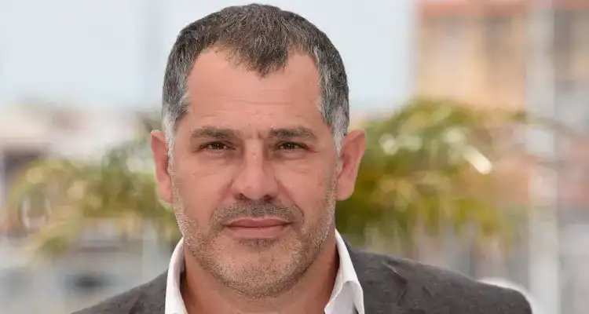

Luc Jaquet
The Director of Natural Wonder
Luc Jacquet, renowned French filmmaker, has dedicated his career to capturing the beauty of nature and raising awareness of environmental issues. Through breathtaking documentaries, he invites us on a fascinating journey to the remotest corners of the planet, while reminding us of the crucial importance of preserving our environment. Discover the man behind the camera who amazes us with spectacular images of nature.
Information
| Type | Personality |
| NationalitY | French |
| Date of birth | December 5 1967 |
| Profession | Director/ |
| Screenwriter/Documentalist | |
Luc Jaquet
"Nature is an infinite source of inspiration and wonder.My goal as a filmmaker is to capture these moments of grace and share the wonder they inspire.We have a responsibility to protect this precious planet for future generations."- Luc Jacquet
Youth
Born on December 5, 1967, in Bourg-en-Bresse, France, Luc Jacquet developed his passion for nature from an early age. He grew up surrounded by the beauty of the French countryside, which profoundly influenced his perspective on the natural world. His curiosity drove him to explore forests, rivers, and mountains, and to observe wildlife in its natural habitat.
His First Documentary
Luc Jacquet's career as a director began to shine with the creation of his first documentary, "March of the Penguins.".
Filmed in Antarctica, the movie captured the extraordinary life of emperor penguins during their perilous breeding journey.
The documentary was a cinematic feat, as it required Jacquet and his team to endure extremely challenging filming conditions, but the result was well worth it.
The film touched the hearts of audiences worldwide with its poignant narrative about the resilience of life in one of the planet's most hostile environments.
His next works
Following the resounding success of "March of the Penguins," Luc Jacquet continued to explore the beauty of nature through a series of impressive documentaries.
He directed "The Fox and the Child," an enchanting tale of the relationship between a wild fox and a young girl, illustrating the magic of coexistence between humans and nature
Subsequently, he helmed "Once Upon a Forest," a captivating documentary that delves into the secret life of the tropical forest.
His documentaries have consistently reminded the audience of the fragility of our planet and the critical importance of nature conservation.
Future projects
Luc Jacquet shows no signs of slowing down.
n. He is actively involved in working on exciting upcoming projects that will shed light on unique aspects of nature.
e. Currently, he is engaged in producing a documentary about glacier melting and its impact on wildlife and local communities.
His commitment to raising awareness about environmental issues persists, and his future projects promise to be as inspiring as his previous ones.
Conclusion
Renowned filmmaker Luc Jacquet takes us on a journey through the natural world, reminding us of the importance of preserving our planet.
From his early days in the French countryside to the creation of globally acclaimed documentaries, Jacquet has left an indelible mark on the world of documentary filmmaking.
His dedication to nature conservation serves as a call to action for all, and he continues to captivate us with his unique vision of Earth's beauty.
In a world in desperate need of more environmental awareness, Luc Jacquet is an indispensable voice reminding us that nature deserves to be celebrated, protected, and preserved for generations to come.